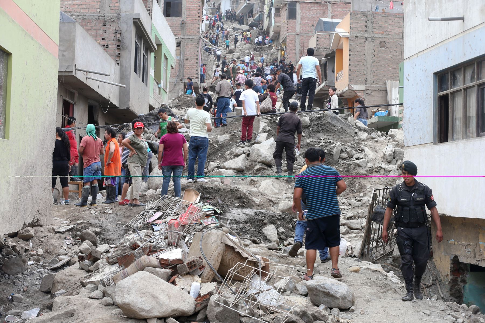
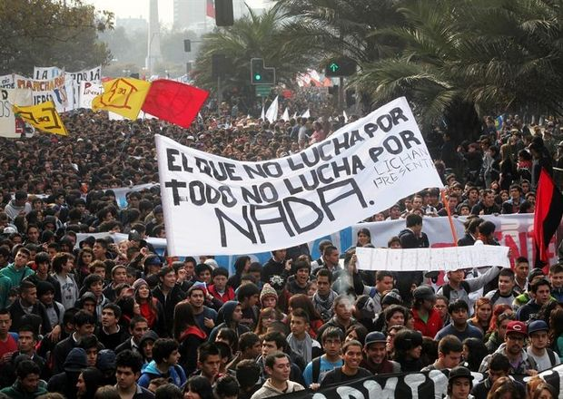

La realidad social en el mundo
En muchas regiones del mundo, millones de personas viven en condiciones de vulnerabilidad, con dificultades para acceder a educación, salud y oportunidades de desarrollo.

La desigualdad social, la pobreza estructural y la falta de acceso a recursos básicos generan un impacto directo en la calidad de vida de comunidades enteras.
Datos comparativos por región
Los siguientes datos representan una estimación general utilizada con fines educativos para mostrar diferencias en indicadores sociales entre distintas regiones del mundo
Se comparan dos factores principales: el nivel de vulnerabilidad social y el acceso a la educación básica, dos elementos clave en el trabajo de organizaciones comunitarias.
| Región | Indicador social | Porcentaje (%) | Descripción del indicador |
|---|---|---|---|
| América Latina | Población en situación de vulnerabilidad | 28% | Personas con acceso limitado a recursos básicos |
| América Latina | Acceso a educación básica | 85% | Personas que completan educación primaria |
| África Subsahariana | Población en situación de vulnerabilidad | 45% | Personas en condiciones de pobreza estructural |
| África Subsahariana | Acceso a educación básica | 63% | Acceso a educación primaria completa |
| Europa | Población en situación de vulnerabilidad | 12% | Personas en riesgo de exclusión social |
| Europa | Acceso a educación básica | 98% | Finalización de educación básica |
| Asia | Población en situación de vulnerabilidad | 22% | Personas con acceso limitado a recursos básicos |
| Asia | Acceso a educación básica | 90% | Acceso a educación primaria completa |
| Datos estimados con fines educativos para ilustrar desigualdades sociales globales | |||
Conclusión
Estos datos permiten comprender las diferencias estructurales entre regiones y la importancia del trabajo de las organizaciones sociales.
¿Por qué es importante la ayuda comunitaria?
Las organizaciones sociales cumplen un rol fundamental en la reducción de estas brechas, acompañando procesos de inclusión y fortalecimiento comunitario.
- Acceso desigual a la educación
- Falta de recursos básicos en comunidades vulnerables
- Desigualdad en oportunidades laborales
En este contexto, iniciativas como Red Puente Comunitario buscan generar oportunidades reales de cambio social.

Este tipo de movimientos sociales reflejan el impacto de las acciones comunitarias en la construcción de sociedades más justas e inclusivas